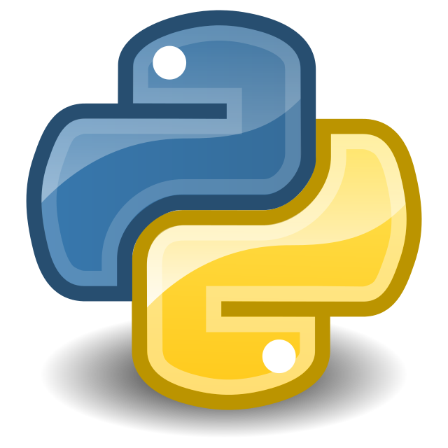
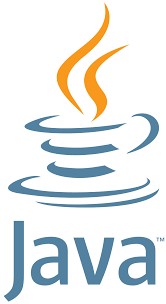

pyhton

cklik me
Python is a high-level, general-purpose programming language. Its design philosophy emphasizes code readability with the use of significant indentation.[33]
Python is dynamically typed and garbage-collected. It supports multiple programming paradigms, including structured (particularly procedural), object-oriented and functional programming. It is often described as a "batteries included" language due to its comprehensive standard library.[34][35]
html
 cklik me
HyperText Markup Language (HTML) is the standard markup language for documents designed to be displayed in a web browser. It defines the content and structure of web content. It is often assisted by technologies such as Cascading Style Sheets (CSS) and scripting languages such as JavaScript.
Web browsers receive HTML documents from a web server or from local storage and
cklik me
HyperText Markup Language (HTML) is the standard markup language for documents designed to be displayed in a web browser. It defines the content and structure of web content. It is often assisted by technologies such as Cascading Style Sheets (CSS) and scripting languages such as JavaScript.
Web browsers receive HTML documents from a web server or from local storage and
java

cklik me
Java is a high-level, class-based, object-oriented programming language that is designed to have as few implementation dependencies as possible. It is a general-purpose programming language intended to let programmers write once, run anywhere (WORA),[16] meaning that compiled Java code can run on all platforms that support Java without the need to recompile.[17] Java applications are typically compiled to